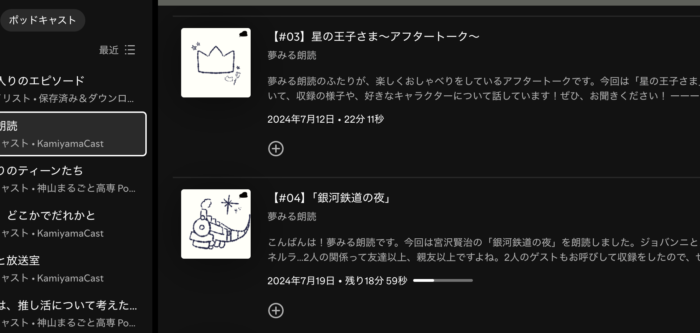
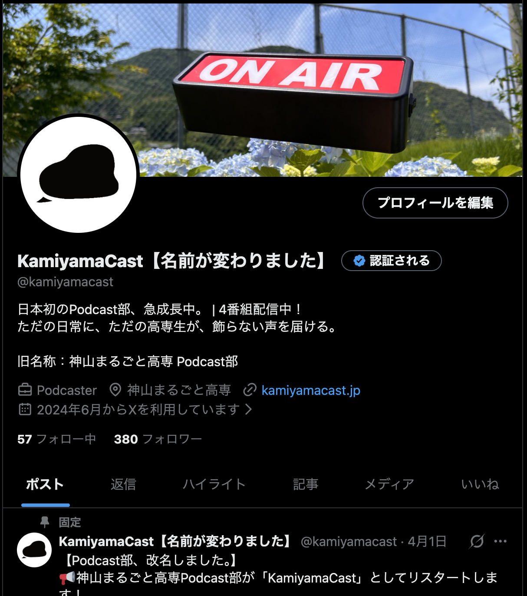
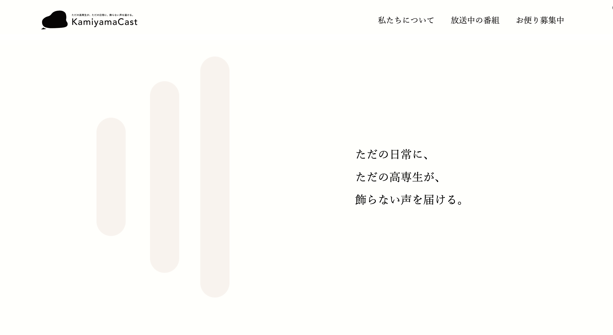

Learning
コンテンツは作って終わりではなく、継続的に届けるための運用設計が大切だと学びました。
2023年ーいままで
企画 / 収録 / 編集 / 配信 / Web運用
神山まるごと高専の学生が、自分たちの声で学校の日常や活動を届けるPodcastメディアです。15〜20歳の学生が、飾らない言葉で今考えていることや取り組んでいることを発信し、学校の雰囲気や学生のリアルな姿を伝えています。
KamiyamaCastでは、学生の活動をきれいにまとめすぎるのではなく、会話の中にある迷いや楽しさ、挑戦の途中にあるリアルな声を大切にしています。Podcastを通して、文章や写真だけでは伝わりにくい声、間、空気感を届けます。
Media Operation





話すテーマやゲスト、届けたい相手を考える

学生同士の自然な会話を大切にしながら収録する

聞きやすさを意識して音声を整え、必要に応じて構成を調整する

Podcastプラットフォームで公開し、サイトやSNSからアクセスできるようにする

公開したエピソードをサイトやSNSで発信し、より多くの人にKamiyamaCastを届ける
KamiyamaCast内で、朗読をテーマにした番組「夢みる朗読」を企画・配信しています。本や文章をただ読むのではなく、声のトーンや間の取り方を通して、言葉の持つ雰囲気や余韻を届けることを大切にしています。
Spotifyで番組を開く
番組一覧、Spotifyの埋め込み、お便り募集などの導線を整理し、初めて訪れた人でも聴きたい番組にたどり着けるWebサイトの設計にも取り組んでいます。
コンテンツは作って終わりではなく、継続的に届けるための運用設計が大切だと学びました。
番組情報や過去のエピソードをより見つけやすく整理し、聴き手と番組がつながる導線も整えていきたいです。